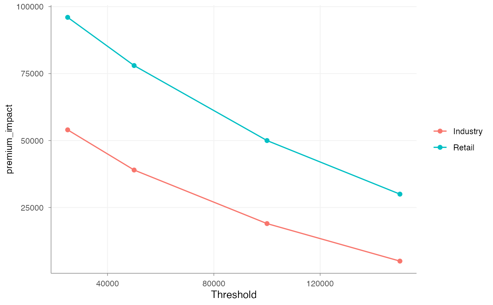

Compare candidate thresholds for capped severity and large-loss pricing work.
assess_excess_threshold() is a diagnostic helper. It does not choose a
threshold automatically. It shows how many claims and how much historical
claim cost sit above candidate thresholds, and how much pure premium would
remain after capping claims at each threshold.
Use this before calculate_excess_loss() to understand the effect of the
threshold on the portfolio. The output is useful for tariff notes, pricing
reviews and governance discussions around capped severity models.
Arguments
- data
A
data.framewith claim-level observations.- claim_amount
Character string. Claim amount column.
- thresholds
Numeric vector of candidate thresholds.
- exposure
Optional character string. Exposure column. If supplied, pure premium before and after capping is calculated.
- group
Optional character string. Grouping column used to assess thresholds by segment.
Examples
claims <- data.frame(
sector = rep(c("Industry", "Retail"), each = 5),
claim_amount = c(1000, 25000, 120000, 50000, 175000,
2000, 40000, 90000, 150000, 300000),
earned_exposure = rep(1, 10)
)
thresholds <- assess_excess_threshold(
data = claims,
claim_amount = "claim_amount",
thresholds = c(25000, 50000, 100000, 150000),
exposure = "earned_exposure",
group = "sector"
)
autoplot(thresholds, y = "premium_impact")
